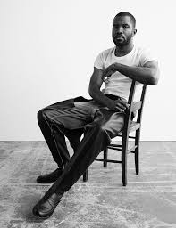

Notable Albums and Songs

Frank Ocean is a very talented musician. Here is a list of his some of his incredible work over the past decade!
Check out his full discography for more of his music
- Streetgfighter
- Strawberry Swing
- Novacane
- We All Try
- Metal Gear Solid
- Songs for Women
- Lovecrimes
- Goldeneye
- There Will Be Tears
- Swim Good
- Dust
- American Wedding
- Soul Calibur
- Nature Feels
Channel Orange
- Start
- Thinkin Bout You
- Fertilizer
- Sierra Leone
- Sweet Life
- Not Just Moeny
- Super Rich Kids
- Pilot Jones
- Crack Rock
- Pyramids
- Lost
- White
- Monks
- Bad Religion
- Pink Matter
- Forrest Gump
- End/Golden Girl
Blonde:
- Nikes
- Ivy
- Pink + White
- Be Yourself
- Solo
- Skyline To
- Self Control
- Good Guy
- Nights
- Solo (Reprise)
- Pretty Sweet
- Facebook Story
- Close To You
- White Ferrari
- Seigfried
- Godspeed
- Futura Free
 Check out a BBC interview with Frank himself from 2012
Check out a BBC interview with Frank himself from 2012